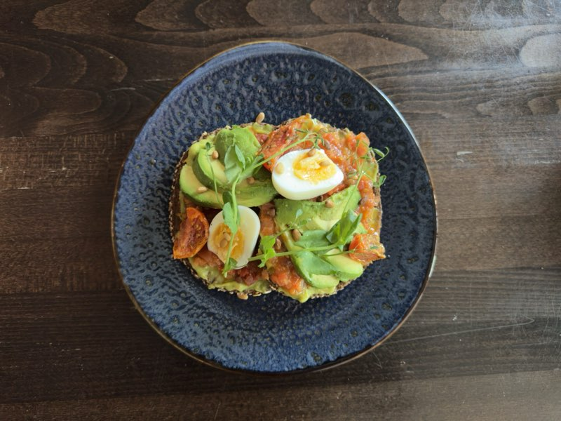

Lunch
Gezellig lunchen in Leiden doe je bij Restaurant Scarlatti aan de Stille Mare! Tussen 11:00 en 16:30 uur kun je bij ons terecht voor de lunch.

Vegetarisch of veganistisch? Op de menukaart (PDF) zie je welke gerechten dat (kunnen) zijn. Laat het ons weten tijdens het bestellen als je een gerecht vegetarisch of veganistisch wilt.
Heb je een allergie? Vraag naar onze allergenenkaart.
Binnenkort iets te vieren?
Onze Heerenkamer op de eerste verdieping is af te huren voor groepen tot 70 personen.